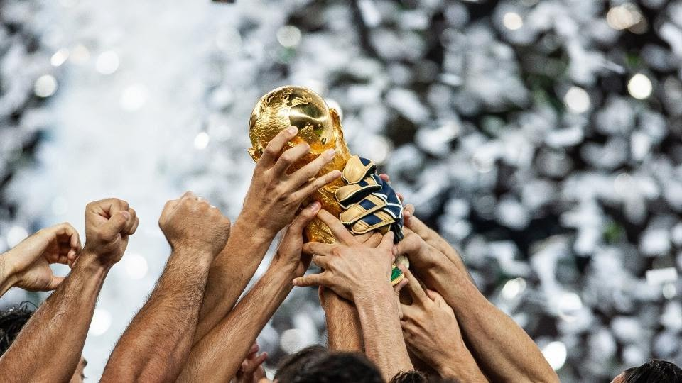
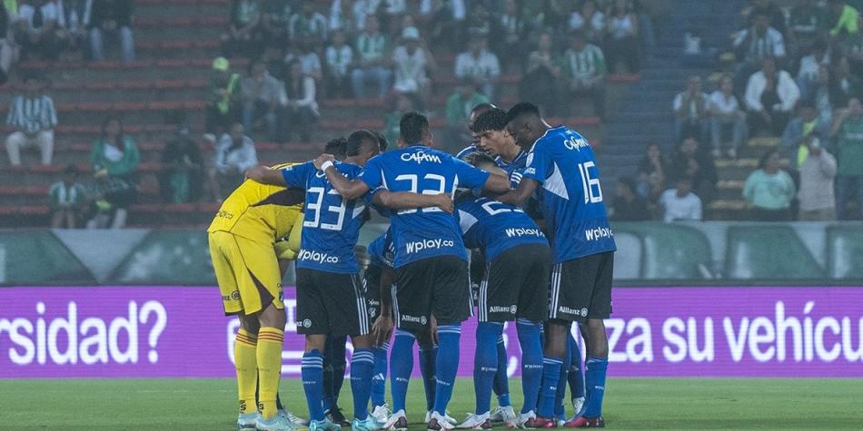

<!DOCTYPE html>
<html>
    <head>
        <meta charset="UTF-8">
        <title>DEPORTES</title>
        <style>
            img {
                max-width: 100%;
                height: auto;
            }
        </style>
    </head>
     <meta name="viewport" content="width=device-width, initial-scale=1.0">
</html>

 <article><h2>¿Cuántos equipos jugarán el Mundial 2026? Formato, cupos del torneo ampliado de la FIFA</h2></article>
 
 </div>
 
 <p>Pese al revuelo que causó en su momento, es un hecho desde que la FIFA anunció que el Mundial 2026, que se celebrará en Estados Unidos, Canadá y México, contará oficialmente con 48 equipos. El formato tradicional de 32 se utilizó por última vez en el Mundial 2022 en Qatar antes de ser desechado y sustituido por el nuevo formato ampliado.</p>

<p>No es la primera vez que la FIFA modifica el formato de la Copa Mundial en un intento de seguir aumentando el valor y la popularidad de su evento estrella. Con una mayor presencia global y el crecimiento del juego en alza, la FIFA ha buscado incluir más países, y así generar un mayor interés mundial en el evento. La adición de partidos contribuye a aumentar los ingresos comerciales y de transmisión.</p>

<H2>¿Cuántas selecciones habrá en el Mundial 2026?</H2>

<p>La FIFA confirmó el 10 de enero de 2017 que el Mundial de 2026 ampliaría la participación a 48 equipos.</p>

<p>Se trata de un aumento de 16 equipos con respecto al formato anterior, en el que 32 selecciones llegaban al torneo final cada cuatro años desde 1998. La Copa del Mundo se ha desarrollado como un torneo de 32 equipos durante siete ediciones desde Francia 98, que aumentó la participación desde los 24 competidores de 1994.</p>

<p>Con el aumento de equipos, el total de partidos disputados pasará de 64 a 104. Sin embargo y el número máximo de partidos jugados por cada semifinalista subirá a ocho encuentros: tres de fase de grupos y cinco de la fase eliminatoria.</p>

<h2>Formato del Mundial 2026 con 48 equipos</h2>
<p>Si bien la FIFA pretendía aumentar el número de partidos aumentando el número de participantes, el organismo rector del fútbol mundial también tuvo cuidado de no aumentar demasiado la carga total de los equipos y los jugadores. Así que la FIFA ideó una estructura de torneo que cumpliera ambos objetivos.</p>
<p>La Copa Mundial de 2022, la última edición de 32 equipos, contó con ocho grupos de cuatro equipos, como viene siendo habitual desde 1998. Los dos mejores equipos de cada grupo pasaron a los octavos de final, que representaron el inicio de las eliminatorias a partido único.</p>

<p>A partir de 2026, para dar cabida a un torneo de 48 equipos, la opción que terminó eligiendo la FIFA fue la de 12 zonas de cuatro equipos cada una, en lugar de una de 16 grupos de tres equipos cada uno que podría haber generado inconvenientes debido a que había equipos que quedarían libres en la última fecha, a la deriva de otro resultado.</p>

<p>Desde las 12 zonas de cuatro equipos, se clasificarán a la fase de eliminación directa los dos primeros de cada zona más los 8 mejores terceros, lo que daría como resultado 32 equipos y, en consecuencia, una ronda más de duelos mano a mano, comenzando con los dieciseisavos de final en lugar de los octavos.</p>

<p>La FIFA también se planteó un torneo de 48 equipos con una ronda de eliminatorias de 32 equipos, en la que los 16 primeros clasificados obtuvieran pases directos a la siguiente ronda, pero se consideró injusto desde el punto de vista deportivo. También hubo dos formatos elaborados en torno a un torneo de 40 equipos, pero la FIFA prefirió la configuración de 48 selecciones</p>
<h2>Millonarios deja el trago amargo en Libertadores: recibe a Águilas</h2>
<p>Alberto Gamero deberá gestionar la nómina ante las ausencias en defensa y ataque.</p>
<p>Millonarios dejó atrás la página de la Copa Libertadores, luego de su eliminación en la tercera fase contra Atlético Mineiro. Momento para afrontar, con lo mejor del plantel, el reto en Liga BetPlay, en la novena fecha contra Águilas Doradas.</p>

<p>En el ámbito de Liga, los embajadores apenas llevan cinco partidos disputados, en contraste con los clubes de la parte superior, que llevan entre siete y los nueve completos. Momento para enfocarse no solo contra los antioqueños, pues se vienen dos duelos fundamentales, para empezar a sumar de a tres, acortando distancias y aspirar por la parte alta del campeonato.</p>
<p>Millonarios dejó atrás la página de la Copa Libertadores, luego de su eliminación en la tercera fase contra Atlético Mineiro. Momento para afrontar, con lo mejor del plantel, el reto en Liga BetPlay, en la novena fecha contra Águilas Doradas.</p>

<p>En el ámbito de Liga, los embajadores apenas llevan cinco partidos disputados, en contraste con los clubes de la parte superior, que llevan entre siete y los nueve completos. Momento para enfocarse no solo contra los antioqueños, pues se vienen dos duelos fundamentales, para empezar a sumar de a tres, acortando distancias y aspirar por la parte alta del campeonato.</p>

<p>El reto de Libertadores pasó su factura, pese a no conseguir el objetivo, quedándose con el premio de consolación de la Sudamericana. Los embajadores no podrán contar con Andrés Llinás, Omar Bertel y Leonardo Castro. El último, salió con molestias en el entrenamiento previo al partido del domingo, con un esguince grado dos en su tobillo.</p>

<p>Además, Álvaro Montero y Juan Pablo Vargas partirán luego del compromiso a las giras de la fecha FIFA, para disputar los duelos con Colombia y Costa Rica, respectivamente. Óscar Cortés ya se encuentra con la Selección Sub 20. En la nómina de convocados, se destaca la presencia de nombres como Samuel Asprilla, quien lucharía un lugar por la lateral izquierda con Jorge Arias.</p>

<p>El partido más reciente, entre ambas escuadras, en El Campín, fue triunfo para Millonarios 2 a 0, el 16 de febrero del 2022, con anotaciones de Daniel Ruiz y Jader Valencia. Los antioqueños no le ganan a los embajadores, en Bogotá, desde el 2013, cuando los derrotaron 1 a 2, con anotaciones de Fabio Rodríguez y Luis Quiñones.</p>

<p>El historial entre Millonarios y Águilas Doradas es de 23 partidos, con seis victorias para cada uno y 11 empates.</p>
